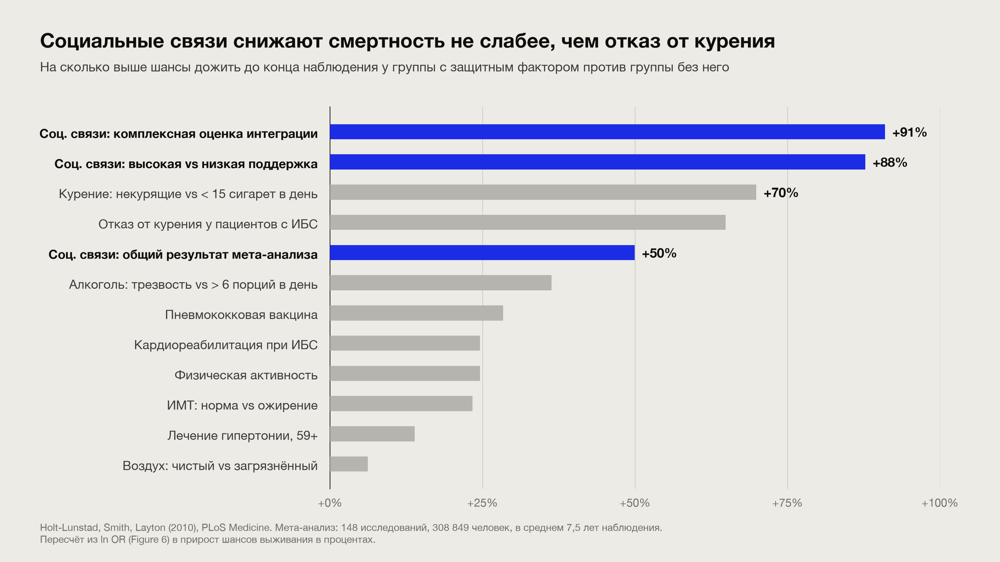

Николай Шейко
фаундер grably.tech и entropy.talk
- не только для предпринимателей
- не только про пенсию
- не только про бабки

Неденежный капитал: почему на пенсии он важнее денег
«Сотни незаписанных интервью»
Капитал ≠ деньги
В 30
Деньги легко меняются на время, здоровье, обучение, связи
В 70
Деньги почти не покупают здоровье, друзей, уважение, смысл
Здоровье и связи — неликвид: нельзя купить срочно, только накопить заранее.
Здоровье: healthspan, не lifespan
- «Мочь то, что хочешь» вместо «жить дольше»
- Сила, мышечная масса, VO2max предсказывают смертность лучше большинства анализов
- Дёшево сейчас, недоступно потом: слух, зубы, зрение, сон
Мозг: fluid падает, crystallized растёт
Fluid intelligenceCrystallized intelligence
Скорость, новые задачи→Синтез, суждение, паттерны
Снижается с ~30→Растёт до 60–70
На этом построена первая половина карьеры→На этом должна ехать вторая
РезервКогнитивный резерв: языки, музыка, сложные хобби с сообществом.

Социальные связи: три слоя
СильныеКто приедет в 3 ночиУ кого ключи от квартиры, кто emergency contact
+
СлабыеОткуда приходят проектыРабота и интересные задачи приносят полузнакомые, не друзья
+
Третье местоГде тебя ждут по умолчаниюНе дом и не работа
Проверка: назовите пять человек, которые приедут в три ночи.
Связи протухают
- Дружба деградирует без контакта за несколько месяцев (Данбар)
- Годовое письмо ученикам и бывшим подчинённым, office hours для бывших студентов
- Совместные дела сближают сильнее всего: горы, фестивали, хакатоны, путешествия, коливинг
Межпоколенческие инвестиции
- Дети — не единственный «младший» актив. Ученики, джуны, менторство
- Reverse mentoring: они учат стеку, ты — суждению. Прокачивает judgement обоим
- Не ожидать возврата, но не терять контакт
Предел «некомпетентности»
- Сложность задачи, которую решит организация, ограничена компетентностью лучшего сотрудника
- Сто мидлов не решают задачу одного сеньора
- Старых держат не за работу, а чтобы они объяснили, как решать
Делает молодёжь. Но без «деда» задача не решилась бы вовсе.
High-water mark остаётся навсегда
- Управлял $1M, 200 людьми, продуктом на миллион юзеров — это необратимо
- Рынок смотрит на максимум, не на среднее и не на текущее
- Планки не суммируются: один раз до 200 лучше, чем десять раз до 20
- Новая планка открывает новый горизонт мышления
Репутация конвертируется в деньги.
А обратно?
капитал = деньги × компетенция × ресурсы © Миша Токовинин
- Деньги легко получить, если есть репутация: компетенция + предсказуемость + этический компас
- Строится годами, легко теряется
- Единственная репутация, нужная с первого дня: «делает, что обещал»
Плюс лычки
личный брендпубликацииawardsсоцсетисообщества
Иногда репутация — это плохо
- Репутация ограничивает: сложно публично косячить
- А делать плохо — критический навык: стартап, бизнес, новая область
- Поиск решается перебором вариантов. Вылизывать каждый = перебрать мало
«Никто и звать никак» — привилегия. Её отнимут.
Одна ось времени
Молодость
Быть никем
- Делать плохо, пробовать
- Собирать опыт
- Разбираться, что нравится делать
- Учиться строить отношения
Середина
Пробивать планки
- Пока есть fluid intelligence
- Пока дают шанс
- Выбирать проекты по потолку
Поздно
Жить на накопленном
- Репутация
- Планки
- Ученики
- Деньги либо уже есть, либо приходят через первые три
Своевременность
Всему в жизни есть свой слот. Пропущенный слот деньгами не выкупается.
- Построения, поддержания, восстановления близкого круга?
- Получения уникального опыта и компетенций?
- Формирования репутации?